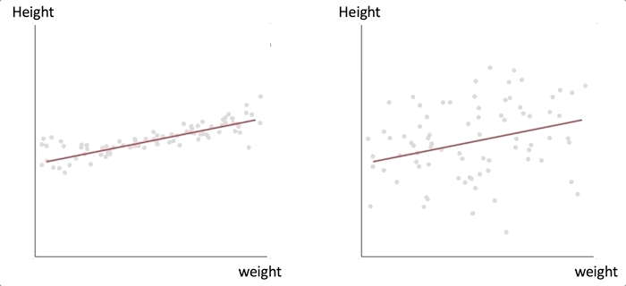

Online Predict Vis Study
IRB # 14263632515
Another type of visualization would display relationships between two numerical attributes.
The examples below display relationships between human height and weight.
The red line indicates the correlation of the two attributes, while each grey dot represents an individual person.
The grey dots keep moving because they are different sets of hypothetical people.
Both figures show that there is a position correlation between height and weight. However, the left figure indicates that
the correlation is strong, while the right figure indicates that the correlation is weak.

Interface demonstration will be shown on the next page.